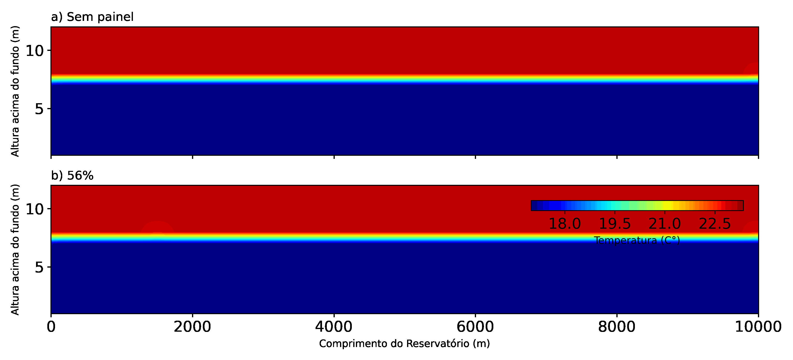
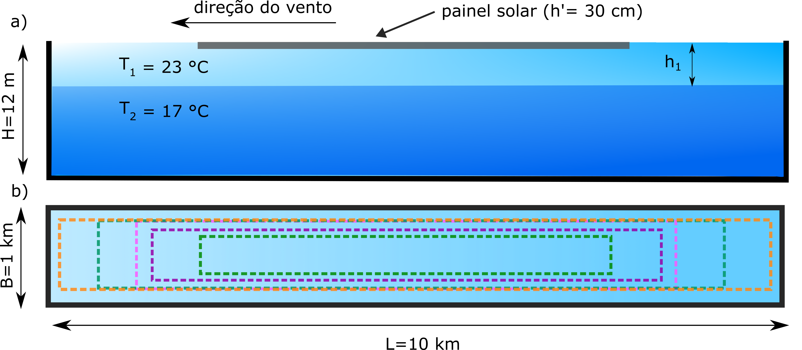
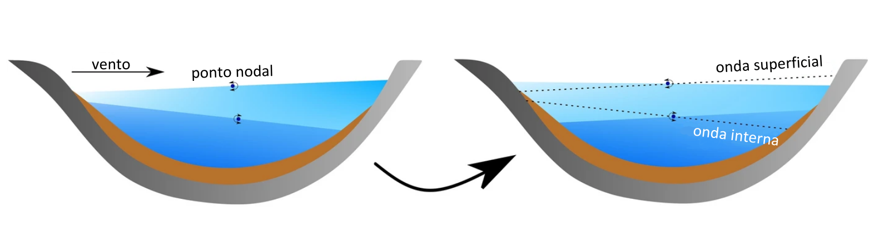

Hidrologia Estatística & Balanço Hídrico
Análise de conjuntos de dados históricos abrangendo séries temporais fluviométricas e pluviométricas. Aplicação de equações de balanço hídrico aliadas a dados de sensoriamento remoto (missões GRACE e GRACE-FO) para estimativa de evapotranspiração em escala de bacia no estado do Paraná.
Desenvolvimento de rotinas e algoritmos em Python e R para filtragem, consistência, correção de viés e modelagem estatística de eventos extremos e disponibilidade hídrica.


Hidrologia Experimental & Modelagem Hidrodinâmica
Simulação computacional hidrodinâmica utilizando o modelo Delft3D para avaliar o impacto da instalação de painéis fotovoltaicos flutuantes na dinâmica de ondas internas e estratificação térmica em reservatórios.
Experiência prática em hidrometria de campo, incluindo ajuste de curvas de descarga, calibração de sensores e medições de vazão com Acoustic Doppler Velocimeter (ADV) e técnica de traçadores.
Sistemas de Alerta e Monitoramento de Riscos (SIMEPAR)
Desenvolvimento de sistemas piloto de alerta precoce para escorregamentos de encostas em rodovias com base em curvas de limiar crítico de chuva acumulada (Serra do Mar).
Criação de índices operacionais de status de seca e monitoramento de mananciais de abastecimento público para concessionárias de saneamento.






Efeito de Painéis Fotovoltaicos Flutuantes em Seichas Internas (TCC)
Modelagem hidrodinâmica tridimensional (Delft3D) desenvolvida no Trabalho de Conclusão de Curso (B.Sc.) para avaliar as alterações provocadas por Usinas Fotovoltaicas Flutuantes (UFF) na geração e dissipação de seichas internas em reservatórios estratificados.
A simulação de cenários de cobertura (0% a 80%) demonstrou que os painéis alteram o fetch do vento e reduzem a transferência de energia ветро do vento para as ondas em até 95,6%, atenuando a amplitude das seichas e diminuindo em 25% a espessura do metalímnio. A presença das placas induz descontinuidades no vento, gerando ondas propagantes que aceleram a dissipação da energia interna do reservatório.